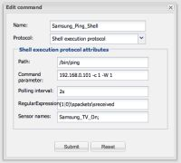
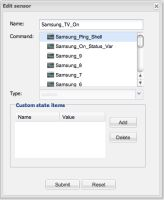

Hello to everyone,
2 days ago I was attending the OpenRemote event in Eindhoven and I'm now trying to finally use my Synology NAS with OpenRemote installed on it. I've got some demo stuff running like using DateTime protocol and Samsung TV protocol. So today I've started to develop my first useful application (at least for me). I would like to have console which shows which devices attached to my home LAN are On and Off. Useful to know if the printer on 2nd floor is turned on. Anyway, I thought that I can use shell ping command for it. My command is:

As I understand that in order to display the status on a panel I must create a sensor. Therefore, I've made a sensor.

However, it does not work. When I upload the configuration to my controller then I get the following error:
{kind=link}
{kind=link}
INFO 2012-11-15 13:43:28,751 : No rule definitions found in '/volume1/@appstore/OpenRemote/webapps/controller/rules'.
INFO 2012-11-15 13:43:28,751 : Initialized event processor : Drools Rule Engine
DEBUG 2012-11-15 13:43:28,755 : Created object model for sensor 'Time Sensor' (ID = '82').
DEBUG 2012-11-15 13:43:28,757 : Created object model for sensor 'Sunset Sensor' (ID = '83').
DEBUG 2012-11-15 13:43:28,760 : Created object model for sensor 'Sunrise Sensor' (ID = '84').
ERROR 2012-11-15 13:43:28,762 : Creating sensor failed. Error : The included command reference in a sensor (ID = 85) is not an event producer (Command id : 85, Type : 65)
XML Element : <sensor xmlns="http://www.openremote.org" id="85" name="Samsung_TV_On" type="custom">
<include type="command" ref="65" />
</sensor>
org.openremote.controller.exception.XMLParsingException: The included command reference in a sensor (ID = 85) is not an event producer (Command id : 85, Type : 65)
at org.openremote.controller.model.xml.Version20SensorBuilder.parseSensorEventProducer(Version20SensorBuilder.java:428)
at org.openremote.controller.model.xml.Version20SensorBuilder.build(Version20SensorBuilder.java:286)
at org.openremote.controller.deployer.Version20ModelBuilder.buildSensorObjectModelFromXML(Version20ModelBuilder.java:773)
at org.openremote.controller.deployer.Version20ModelBuilder.buildSensorModel(Version20ModelBuilder.java:619)
at org.openremote.controller.deployer.Version20ModelBuilder.build(Version20ModelBuilder.java:537)
at org.openremote.controller.deployer.AbstractModelBuilder.buildModel(AbstractModelBuilder.java:148)
at org.openremote.controller.service.Deployer.startup(Deployer.java:760)
at org.openremote.controller.service.Deployer.softRestart(Deployer.java:373)
at org.openremote.controller.service.Deployer$ControllerDefinitionWatch.run(Deployer.java:1188)
at java.lang.Thread.run(Thread.java:662)
INFO 2012-11-15 13:43:28,763 : Registered sensor : Sensor (Name = 'Sunrise Sensor', ID = '84', State Mappings: {})
INFO 2012-11-15 13:43:28,763 : Registered sensor : Sensor (Name = 'Sunset Sensor', ID = '83', State Mappings: {})
INFO 2012-11-15 13:43:28,764 : Registered sensor : Sensor (Name = 'Time Sensor', ID = '82', State Mappings: {})
INFO 2012-11-15 13:43:28,766 :
Startup complete.
So it is not working. I am doing something wrong but have no idea what. Any help would be appreciated.
Kind regards,
Michal
{kind=link}
{kind=link}
{kind=link}
{kind=link}
|
If you only have one sensor you don't need to fill "SensorNames" in the command. |
|
Hi Marcus, well it does not matter if I put anything in "SensorNames". It rises error on creating sensor anyway. Maybe the Synology package does not have the proper version. It says that it is running version 2.0.0-005. Is this the latest one? |
|
It seems to be an older version. Try and download 2.1 developersnapshot from sourceforge and put the webapps/controller folder onto the NAS. |
|
Well, it seems more bumpy than I thought. I've put the 2.1 controller folder on NAS but I am unable to sync it with designer. In the log file I see: Could not find a controller definition to load at path '../webapps/controller/controller.xml' (for version 2.0) And my controller page looks like: Please note that there is no MAC address so I am unable to link this controller with my account. Seems that I will need to wait for an official update of the Synology package. |
|
This is the 2.1 snapshot from sourceforge, right? |
|
Yes, 2.1 snapshot. And yes, Eric already created account for me, and yes, I gave him my e-mail at the training. Anyway, I try now the version on the controller from the pro designer account... ERROR 2012-11-16 14:39:16,899 : !!! Unable to announce controller MAC address to Beehive So I am unable to link this controller with designer. One more detail is that in the Synology package center the version on OpenRemote install is still reported as 2.0.0-005, so it does not pick the new controller version when simply copying it into webapps. I don't know how important this is though. |
|
To have a first try you can disable some of the new features. controller.performBeehiveSyncing=false And to install design from Pro account change the other line needed is: beehive.REST.Root.Url = http://designer.openremote.com/beehive/rest/ |
|
Thank you for pointing me on this file. The lines you've mentioned were OK, however I've noticed few lines which referred to port 8080. As the Synology's install uses port 18581 I've changed blindly all 8080 in this file to 18581 and tadaaa, sensor was created PING 192.169.0.101 (192.168.0.101): 56 data bytes Not what I was expecting |
|
Trying to get it run saturday morning I came to conclusion that there must be something serious wrong. Here is the perl script I've tried to run: DiskStation> cat ping.pl Running it on NAS gives following output: DiskStation> ./ping.pl 192.168.10.101 Which means that device 192.168.10.101 is On. When device is off then the result is: DiskStation> ./ping.pl 192.168.10.99 On the web interface I see only the "hello" string, which means that perl is called but the whole regexp result get lost. This is also strange as it depends on regexp, some of them pass through, but not this one. Moreover, on Android device this controller crashes the openremote app, it runs on iOS the same as on web interface. Perhaps you can run this simple perl script through the controller and see why it does not output correctly? |
|
Maybe you can try with a "clean" design? |
|
Hello, Did you find the solution to ping some equipment with readable results ? Thanks, |
|
Marcus, I had to set BeehiveSyncing=false for another reason. I'm getting a: I assume a rest call is being made to check if new commands are available at the check interval beehiveCommandService.check.interval=5000 (ie. every 5 seconds). I'm using 2.1.0 Pro version on Synology 212+ and setting all rest URL's to http://designer.openremote.com/... in the config.properities file. |
|
My logs were also flooded with this message. This is a known error registered in JIRA on 2012-12-29. It has priority 3. Will take a while before it is fixed I guess. |
|
Following the instructions on page http://www.openremote.org/display/docs/OpenRemote+2.0+How+To+-+Execute+Shell+commands I tried to run a shell script on my Synology DS212+. |
|
Do you see any errors in the log files? |
|
Vincent, as I'm testing now the professional designer with eBox, I've tried this ping on it. It partially works, i.e. the command is executed but I'm unable to filter output results. Currently I'm getting the full ping response instead of 1 or 0 what I want. I'll dig in it more. |
Logfiles are useless atm, because they are flooded with beehive error messages. (See: http://www.openremote.org/pages/viewpage.action?pageId=21037421&focusedCommentId=21528749#comment-21528749)
I do not know, and I do not know how to find that. I did notice that Patters created a new user openremote at installation. I did place the script file under the webapps/private subdirectory assuming that it would get the proper rights.
I do get the impression that it is a rights issue on the synobox. In my original post I stated by mistake that I was logged in as admin instead of root. If logged in with telnet as admin, the script does not run. |
|
Login as root and performa a "chmod 777 /volume1/@appstore/OpenRemote/webapps/private/GetPVlogger.sh". Other solution: |
|
Marcus, Thanks for the help anyhow |
|
What should the script do? |
I was just wrapping up some loose ends of my solar production monitoring. I had that working on PC, and wanted to port to the *nix based Synobox. At regular intervals I must copy a xml file from my PVlogger. As I thought Linux was simple and elegant, I made a simple script of the form: ping <url> if [ $? -eq 0 ]; then wget -N <url>/status.xml else : fi Apparantly the silly ping command is to dangerous for normal users
You mean the PHP example? I saw that a couple of days ago. I may have a look into that route some later time. For now I am putting this project on a low burner |
|
He used PHP to retrieve a file from Vera and save the result in a local copy. package org.openremote.controller.model.event import org.apache.commons.io.FileUtils; import java.net.URL; import java.io.File; rule "Poll Vera every minute" timer (cron: 0 * * * * ?) when eval(true) then pollVera(); end function void pollVera() { FileUtils.copyURLToFile(new URL("http://www.google.de"), new File("../webapps/controller/vera.xml")); } |
|
I adapted this one for my settings, i.e. I changed the url's. Initially it worked fine, but after a 3 minute shutdown of the PVlogger, the updating did not resume. I had to restart the controller to resume updating. As the PVlogger is powered by the solar panels it shuts down if the light levels become to low. So that is why I included the ping test in my *nix script. |
|
Ok, I assume the rule engine shuts down if an uncaught execption occurs.
function void pollVera() {
try {
FileUtils.copyURLToFile(new URL("http://www.google.de"), new File("../webapps/controller/vera.xml"));
} catch (Throwable t) {
//Here the error should be handled. Lets just print it to the console
t.printStackTrace();
}
}
|
|
It now has stopped updating the status.xml alltogether. I have sent you the log files by mail. |
|
Marcus,
|
|
I do get this repetitive Too many open files error at every run of my script file (Script see http://www.openremote.org/pages/viewpage.action?pageId=21037421&focusedCommentId=21528789#comment-21528789). Can't find the cause for this. Even though the log file says it can't run the script, I do see that the xml-file is copied every minute as specified in the OS command call. Unfortunately the error message does not get a time stamp, so it is hard to check if that error really occurs every minute. ERROR [Polling thread for sensor: Get PVlogger Data 100459]: Could not execute shell command: /volume1/@appstore/OpenRemote/webapps/private/pvlogger.sh java.io.IOException: Cannot run program "/volume1/@appstore/OpenRemote/webapps/private/pvlogger.sh": java.io.IOException: error=24, Too many open files at java.lang.ProcessBuilder.start(ProcessBuilder.java:460) at java.lang.Runtime.exec(Runtime.java:593) at java.lang.Runtime.exec(Runtime.java:466) at org.openremote.controller.protocol.shellexe.ShellExeCommand.executeCommand(Unknown Source) at org.openremote.controller.protocol.shellexe.ShellExeCommand.run(Unknown Source) at java.lang.Thread.run(Thread.java:662) Caused by: java.io.IOException: java.io.IOException: error=24, Too many open files at java.lang.UNIXProcess.<init>(UNIXProcess.java:148) at java.lang.ProcessImpl.start(ProcessImpl.java:65) at java.lang.ProcessBuilder.start(ProcessBuilder.java:453) ... 5 more Any idea of what causes this? |
|
Might be that the used streams to read the data of the subprocess have to be closed. |
|
Fine, thanks. As this only is part of a not essential little demo project, it is not a real urgency for me. |
|
I am working on a different solution for getting these data directly from the Solar data logger. The data logger holds an XML file that holds the most recent parameter values. With an http call I do get those as numerical values in a range sensor as described here: http://www.openremote.org/display/forums/How+to+make+a+Range+Sensor+from+an+HTTP+Command Following the example from the openremote.zip file from Marcus (http://openremote.org/pages/viewpage.action?pageId=19435074&focusedCommentId=19440358#comment-19440358), I created the following rule that is supposed to replace N/A with 0. package org.openremote.controller.protocol global org.openremote.controller.statuscache.CommandFacade execute; import org.openremote.controller.model.event.* rule "Reset SolarPower value to 0 at night" when $evt : Event (source == "SolarPowerLevel", value == "N/A") then execute.command("SolarPower", 0); end Apparantly I am still to naive w.r.t. rules, as nothing is happening. In this example I have a range sensor "SolarPowerLevel", which uses http command SolarPower. Below the first part of the logfile 2013-02-05 12:54:30,045 ERROR [Polling thread for sensor: SolarPowerLevel]: IOException when executing HTTP method org.apache.http.conn.HttpHostConnectException: Connection to http://192.168.1.36 refused at org.apache.http.impl.conn.DefaultClientConnectionOperator.openConnection(DefaultClientConnectionOperator.java:127) at org.apache.http.impl.conn.AbstractPoolEntry.open(AbstractPoolEntry.java:147) at org.apache.http.impl.conn.AbstractPooledConnAdapter.open(AbstractPooledConnAdapter.java:108) at org.apache.http.impl.client.DefaultRequestDirector.execute(DefaultRequestDirector.java:415) at org.apache.http.impl.client.AbstractHttpClient.execute(AbstractHttpClient.java:641) at org.apache.http.impl.client.AbstractHttpClient.execute(AbstractHttpClient.java:731) at org.apache.http.impl.client.AbstractHttpClient.execute(AbstractHttpClient.java:709) at org.apache.http.impl.client.AbstractHttpClient.execute(AbstractHttpClient.java:700) at org.openremote.controller.protocol.http.HttpGetCommand.requestURL(Unknown Source) at org.openremote.controller.protocol.http.HttpGetCommand.run(Unknown Source) at java.lang.Thread.run(Thread.java:662) Caused by: java.net.ConnectException: Connection timed out at java.net.PlainSocketImpl.socketConnect(Native Method) at java.net.PlainSocketImpl.doConnect(PlainSocketImpl.java:351) at java.net.PlainSocketImpl.connectToAddress(PlainSocketImpl.java:213) at java.net.PlainSocketImpl.connect(PlainSocketImpl.java:200) at java.net.SocksSocketImpl.connect(SocksSocketImpl.java:366) at java.net.Socket.connect(Socket.java:529) at org.apache.http.conn.scheme.PlainSocketFactory.connectSocket(PlainSocketFactory.java:123) at org.apache.http.impl.conn.DefaultClientConnectionOperator.openConnection(DefaultClientConnectionOperator.java:123) ... 10 more 2013-02-05 12:54:30,079 ERROR [Polling thread for sensor: SolarPowerLevel]: Could not perform xpath evaluation org.xml.sax.SAXParseException: Premature end of file. at com.sun.org.apache.xerces.internal.parsers.DOMParser.parse(DOMParser.java:246) at com.sun.org.apache.xerces.internal.jaxp.DocumentBuilderImpl.parse(DocumentBuilderImpl.java:284) at javax.xml.parsers.DocumentBuilder.parse(DocumentBuilder.java:124) at org.openremote.controller.protocol.http.HttpGetCommand.run(Unknown Source) at java.lang.Thread.run(Thread.java:662) 2013-02-05 12:54:51,198 ERROR [Polling thread for sensor: SolarPowerLevel]: IOException when executing HTTP method org.apache.http.conn.HttpHostConnectException: Connection to http://192.168.1.36 refused at org.apache.http.impl.conn.DefaultClientConnectionOperator.openConnection(DefaultClientConnectionOperator.java:127) at org.apache.http.impl.conn.AbstractPoolEntry.open(AbstractPoolEntry.java:147) at org.apache.http.impl.conn.AbstractPooledConnAdapter.open(AbstractPooledConnAdapter.java:108) at org.apache.http.impl.client.DefaultRequestDirector.execute(DefaultRequestDirector.java:415) at org.apache.http.impl.client.AbstractHttpClient.execute(AbstractHttpClient.java:641) at org.apache.http.impl.client.AbstractHttpClient.execute(AbstractHttpClient.java:731) at org.apache.http.impl.client.AbstractHttpClient.execute(AbstractHttpClient.java:709) at org.apache.http.impl.client.AbstractHttpClient.execute(AbstractHttpClient.java:700) at org.openremote.controller.protocol.http.HttpGetCommand.requestURL(Unknown Source) at org.openremote.controller.protocol.http.HttpGetCommand.send(Unknown Source) at org.openremote.controller.model.Command.execute(Unknown Source) at org.openremote.controller.statuscache.CommandFacade.command(Unknown Source) at org.openremote.controller.statuscache.CommandFacade.command(Unknown Source) at org.openremote.controller.protocol.Rule_Reset_SolarPower_value_to_0_at_night_0.defaultConsequence(Rule_Reset_SolarPower_value_to_0_at_night_0.java:7) at org.openremote.controller.protocol.Rule_Reset_SolarPower_value_to_0_at_night_0DefaultConsequenceInvoker.evaluate(Rule_Reset_SolarPower_value_to_0_at_night_0DefaultConsequenceInvoker.java:25) at org.drools.common.DefaultAgenda.fireActivation(DefaultAgenda.java:917) at org.drools.common.DefaultAgenda.fireNextItem(DefaultAgenda.java:856) at org.drools.common.DefaultAgenda.fireAllRules(DefaultAgenda.java:1071) at org.drools.common.AbstractWorkingMemory.fireAllRules(AbstractWorkingMemory.java:785) at org.drools.common.AbstractWorkingMemory.fireAllRules(AbstractWorkingMemory.java:751) at org.drools.impl.StatefulKnowledgeSessionImpl.fireAllRules(StatefulKnowledgeSessionImpl.java:218) at org.openremote.controller.statuscache.rules.RuleEngine.push(Unknown Source) at org.openremote.controller.statuscache.EventProcessorChain.push(Unknown Source) at org.openremote.controller.statuscache.StatusCache.update(Unknown Source) at org.openremote.controller.model.sensor.Sensor.update(Unknown Source) at org.openremote.controller.protocol.http.HttpGetCommand.run(Unknown Source) at java.lang.Thread.run(Thread.java:662) Caused by: java.net.ConnectException: Connection timed out at java.net.PlainSocketImpl.socketConnect(Native Method) at java.net.PlainSocketImpl.doConnect(PlainSocketImpl.java:351) at java.net.PlainSocketImpl.connectToAddress(PlainSocketImpl.java:213) at java.net.PlainSocketImpl.connect(PlainSocketImpl.java:200) at java.net.SocksSocketImpl.connect(SocksSocketImpl.java:366) at java.net.Socket.connect(Socket.java:529) at org.apache.http.conn.scheme.PlainSocketFactory.connectSocket(PlainSocketFactory.java:123) at org.apache.http.impl.conn.DefaultClientConnectionOperator.openConnection(DefaultClientConnectionOperator.java:123) ... 26 more 2013-02-05 12:55:04,218 ERROR [Polling thread for sensor: SolarPowerLevel]: IOException when executing HTTP method java.net.NoRouteToHostException: No route to host at java.net.PlainSocketImpl.socketConnect(Native Method) at java.net.PlainSocketImpl.doConnect(PlainSocketImpl.java:351) at java.net.PlainSocketImpl.connectToAddress(PlainSocketImpl.java:213) at java.net.PlainSocketImpl.connect(PlainSocketImpl.java:200) at java.net.SocksSocketImpl.connect(SocksSocketImpl.java:366) at java.net.Socket.connect(Socket.java:529) at org.apache.http.conn.scheme.PlainSocketFactory.connectSocket(PlainSocketFactory.java:123) at org.apache.http.impl.conn.DefaultClientConnectionOperator.openConnection(DefaultClientConnectionOperator.java:123) at org.apache.http.impl.conn.AbstractPoolEntry.open(AbstractPoolEntry.java:147) at org.apache.http.impl.conn.AbstractPooledConnAdapter.open(AbstractPooledConnAdapter.java:108) at org.apache.http.impl.client.DefaultRequestDirector.execute(DefaultRequestDirector.java:415) at org.apache.http.impl.client.AbstractHttpClient.execute(AbstractHttpClient.java:641) at org.apache.http.impl.client.AbstractHttpClient.execute(AbstractHttpClient.java:731) at org.apache.http.impl.client.AbstractHttpClient.execute(AbstractHttpClient.java:709) at org.apache.http.impl.client.AbstractHttpClient.execute(AbstractHttpClient.java:700) at org.openremote.controller.protocol.http.HttpGetCommand.requestURL(Unknown Source) at org.openremote.controller.protocol.http.HttpGetCommand.run(Unknown Source) at java.lang.Thread.run(Thread.java:662) It would be nice if this could be handled from within the http-call. That would also reduce the number of error messages in the log. |
|
Hello, Sure that "N/A" is a readable value ? +1 for the http-call handling timeout error Regards, – |
Well Marcus' code suggests it is: rule "Set Virtual Play/Pause to Pause when player is not available" when $evt : Event (source == "XBMCActivePlayerId", value == "N/A") then execute.command("XBMC_Virtual_Player_status", "off"); end |
|
Yes sorry I saw Marcus rules after replying |
|
No need to apologize, I do appreciate that you did take the time to look into it. |
{kind=link}
{kind=link}